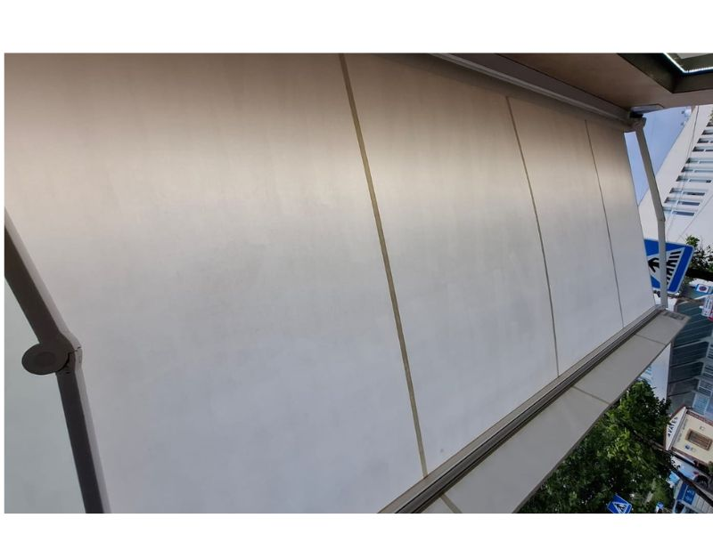
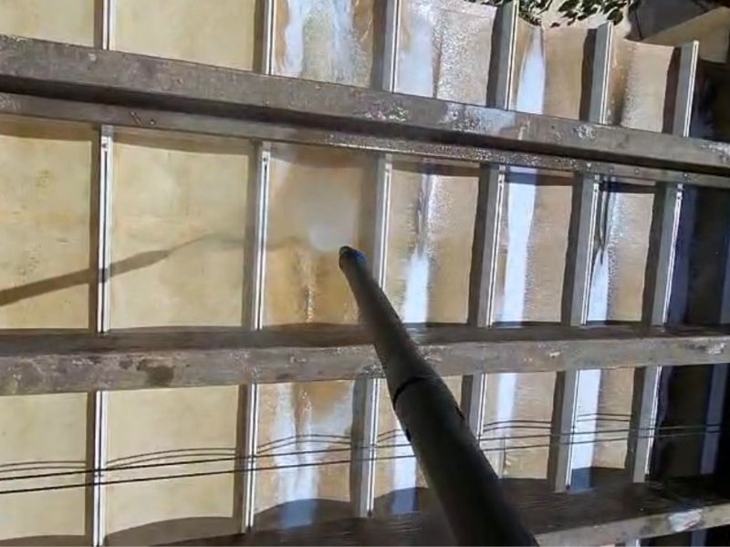
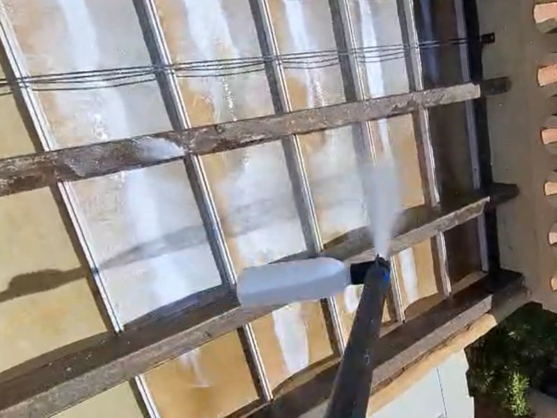

Tu exterior,
mejor cuidado.Your outdoor space,
better cared for.
Toldos · tejidos exteriores · terrazas. Sol, polvo, humedad y costa.Awnings · outdoor fabrics · terraces. Sun, dust, humidity and coastal conditions.
ANTES & DESPUÉS · FCTBEFORE & AFTER · FCT
Mira el cambio.See the difference.



OUTDOOR & AWNING CARE · FCT
Lo que cuidamos.What we care for.
ToldosAwnings
Terrazas · balcones · fachadasTerraces · balconies · façades
Tejidos exterioresOutdoor fabrics
Polvo · humedad · ambiente costeroDust · humidity · coastal conditions
SombrillasParasols
Viviendas · terrazas · negociosHomes · terraces · businesses
Proyectos múltiplesMultiple units
Varios toldos · hospitality · comercialMultiple awnings · hospitality · commercial
Fotos · medidas aproximadas · altura · acceso · punto de aguaPhotos · approximate size · height · access · water point
ENVIAR FOTOS ↗SEND PHOTOS ↗VALORACIÓN · FCTASSESSMENT · FCT
Envíanos fotos. Te damos precio.Send photos. We’ll price it.
2–3 imágenes del toldo y su estado.2–3 images of the awning and its condition.
Ancho y salida aproximados.Approximate width and projection.
Altura, acceso y punto de agua.Height, access and water point.
Confirmamos la valoración antes de reservar.We confirm the assessment before booking.
10 PREGUNTAS FRECUENTES10 FREQUENT QUESTIONS
Antes de reservar.Before you book.
¿Se puede limpiar cualquier toldo?Can every awning be cleaned?
Primero valoramos tejido, antigüedad y estado. Si vemos riesgo de daño, te lo indicamos antes de confirmar.We first assess the fabric, age and condition. If we see a risk of damage, we tell you before confirming.
¿Usáis agua a presión?Do you use pressurised water?
Cuando corresponde, usamos presión de agua controlada y adaptada al tejido y a su estado. No todos los toldos se limpian igual.When appropriate, we use controlled water pressure adapted to the fabric and its condition. Not every awning is cleaned the same way.
¿Se elimina la calima y el polvo acumulado?Can Saharan dust and accumulated dirt be removed?
En muchos casos se consigue una mejora importante. El resultado depende del tejido, la acumulación y el tiempo que lleve la suciedad.In many cases there is a significant improvement. Results depend on the fabric, build-up and how long the dirt has been there.
¿Se eliminan todas las manchas?Can every stain be removed?
No siempre. Sol, humedad, aves, grasa y manchas antiguas pueden dejar marcas permanentes. Lo valoramos antes.Not always. Sun, humidity, birds, grease and old stains can leave permanent marks. We assess this first.
¿Necesitáis un punto de agua?Do you need a water point?
Normalmente sí. Necesitamos conocer dónde está el grifo, la presión disponible y la distancia hasta el toldo.Usually yes. We need to know where the tap is, the available pressure and the distance to the awning.
¿Y si el toldo está en altura?What if the awning is at height?
La altura y el acceso forman parte de la valoración. Envíanos fotos donde se vea el toldo completo y cómo se accede.Height and access are part of the assessment. Send photos showing the whole awning and how it is accessed.
¿Cuánto tarda la limpieza?How long does cleaning take?
Como referencia, un servicio de toldos suele requerir unas 2–2,5 h. Puede variar según tamaño, cantidad, estado y acceso.As a guide, an awning service usually takes around 2–2.5 hours. It varies with size, quantity, condition and access.
¿Cuánto tarda en secar?How long does it take to dry?
Depende del tejido, ventilación, sol y humedad del día. Por eso también tenemos en cuenta las condiciones meteorológicas.It depends on the fabric, ventilation, sun and humidity that day. That is why we also take weather conditions into account.
¿Qué necesitáis para darme precio?What do you need to give me a price?
2–3 fotos, medidas aproximadas, código postal, altura/acceso y una foto del punto de agua indicando su distancia al toldo.2–3 photos, approximate dimensions, postcode, height/access and a photo of the water point showing its distance from the awning.
¿Trabajáis con varios toldos o negocios?Do you work with multiple awnings or businesses?
Sí. Valoramos viviendas, terrazas y proyectos con varios toldos para hospitality y espacios comerciales.Yes. We assess homes, terraces and multi-awning projects for hospitality and commercial spaces.
OUTDOOR CARE · FCT
¿Quieres precio exacto?Want an exact price?
Envíanos fotos y medidas por WhatsApp.Send photos and dimensions on WhatsApp.
ENVIAR FOTOS ↗SEND PHOTOS ↗